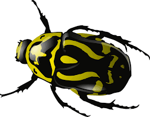

Health Matrix. Quick way to make shure that everything is OK with my projects and libraries
Тестовая матрица. Быстрый способ убедиться что всё OK с моими проектами и библиотеками


Feature requests
and other
Запросы на добавление функционала
и прочее
